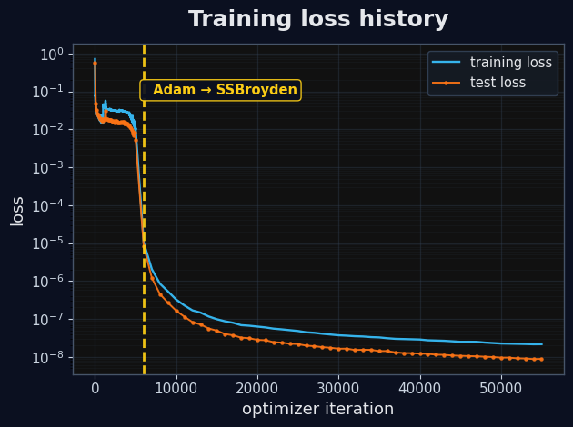

This demo trains and deploys a data-free physics-informed neural network to
learn a parametric solution for the adjoint to the relativistic Fokker-Planck
equation. The solution to the PDE represents a runaway probability function (RPF)
as a function of relevant plasma parameters.
Physical model
The PDE of interest is the adjoint to the steady-state relativistic Fokker-Planck equation
where \((\textcolor{red}{E_\parallel},\textcolor{lime}{Z_{eff}},\textcolor{cyan}{\alpha})\)
are the parameters to the PDE, \((p,\xi)\) are the independent variables,
being the relativistic momentum and pitch-angle, respecitively, and \((P)\) is the
so-called runaway probability function (RPF). Boundary conditions are given by
The goal of the PINN is to thus learn the parametric solution \(P(p,\xi;E_\Vert,Z_{eff},\alpha)\).
Data-free PINN construction
The central objective of the PINN will be to learn a solution to the PDE that satisfies
the loss function containing the PDE and the boundary conditions. Instead of an imposing additional
constraint for the PINN's solution to be bounded between 0 and 1, the following transform is applied
\[
P = \tanh(\bar{p}^2P_{NN}^2),
\]
where \(\bar{p} \equiv (p-p_{min})/(p_{max}-p_{min}) \in [0,1]\), and \(P_{NN}\)
is the raw output of the neural network. In addition to the benefit of \(P\) being
constrianed to a probability value, the low momentum boundary condition is
also inherently satisfied. As a result, the loss function that the PINN will seek
to minimize will be the PDE and the high momentum boundary condition, written as
where \(\mathcal{R,B}\) are the residual errors of the PDE and high momentum boundary condition,
respectively. A schematic of the PINN is shown below.
Regarding the optimization procress, this will be done by deploying two algorithms.
The first will be ADAM for the first handful of iterations, as ADAM is effective at
approaching the general area in which the global minimum lies. After the PINN has
sufficiently trained with ADAM, a second order quasi-Newton algorithm will be used (SSBroyden),
which is significantly more effective at overcoming local minima and reaching levels of
loss equivalent to numerical precision.
PINN training configuration
The PINN will train over the following range of parameters:
\(p \in [0.17, 10.8], \xi \in [-1,1], E_\Vert \in [1,10], Z_{eff} \in [1,10], \alpha \in [0,0.2]\).
The neural network is chosen to have a width of 48 neurons and a depth of 6 layers, and the tanh
activation function is used.
For the collocation points, roughly 1 million points are used in the interior of the domain,
and a quarter million points are additionally sampled at the boundary condition. The PINN
will train with ADAM for 5,000 iterations and SSBroyden for 50,000 iterations. Lastly, the PINN
will train on an NVIDIA B200 GPU and implemented in the JAX library in Python.
The training history is show below.

Parametric PINN solution
The sliders below can be adjusted to
view the impact of the plasma parameters on the
PINN solution, and the correspinding residual is also shown.